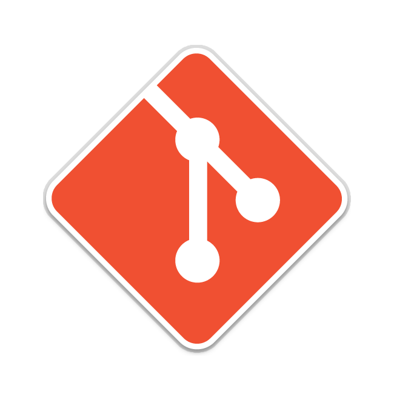

Ferramentas
Introdução
Bem-vindo à página de ferramentas do projeto! Aqui você encontrará uma lista de ferramentas e recursos que serão utilizados ao longo do desenvolvimento do projeto. Essas ferramentas foram selecionadas para ajudar a maximizar a eficiência e a qualidade do projeto, tornando o processo de desenvolvimento mais ágil e eficaz. Cada ferramenta listada nesta página tem um propósito específico e irá desempenhar um papel importante em todo o processo.
Ferramentas
A tabela a seguir, Tabela 1, apresenta todas as ferramentas utilizadas no projeto, bem como sua aplicação em cada etapa correspondente.
| Logo | Ferramenta | Etapa | Descrição |
|---|---|---|---|
 |
GitHub | Todo o projeto | O GitHub é usado para hospedar o projeto em um repositório público. |
|  | Git | Todo o projeto | O Git é usado para controlar as versões do projeto. |
 |
Telegram | Todo o projeto | O Telegram é usado para a comunicação entre os colaboradores do projeto. |
 |
Discord | Todo o projeto | O Discord é usado para a comunicação por voz e texto entre os colaboradores do projeto. |
 |
MkDocs | Todo o projeto | O MkDocs é usado para criar documentação de projetos em formato HTML ou outros formatos, a partir de arquivos em formato Markdown |
 |
MkDocs | Todo o projeto | O MkDocs Material é um tema de documentação para o MkDocs que oferece uma aparência moderna e responsiva para a documentação do projeto. |
 |
Teams | Todo o projeto | O Teams é um aplicativo web e app para realizar reuniões de pessoas desenvolvida pela microsoft, sendo utilizada no projeto como principal ferramenta para a reunião semanal e gravações |
 |
Officer Viewer | Todo o projeto | O Officer Viewer(Markdown Editor) é uma extensão do Visual Studio Code utilizada para editar de maneira mais fácil documento com extensão .md(markdown) |
 |
Google Forms | Elicitação, Priorização e Modelagem | O Google Forms é uma ferramenta de criação de formulários on-line gratuita oferecida pelo Google. Será utilizado para fazer questionários para a pesquisa de perfil de usuário do projeto, além de elaborar os termos de consentimento. |
 |
VsCode | Todo o projeto | O VsCode é usado para editar o código markdown que gera a página. |
 |
YouTube | Atas Apresentações | O YouTube é o site pelo qual o grupo hospeda as gravações. |
 |
Lucidchart | Casos de uso | O Lucidchart é usado para fazer a diagramação e visualização de informações. |
 |
Lucidspark | Priorização e Modelagem Ágil | O Lucidspark é uma ferramenta de colaboração online projetada para facilitar a colaboração visual e a geração de ideias em equipe. Ele oferece uma plataforma virtual onde os membros da equipe podem colaborar em tempo real, compartilhar ideias, organizar informações e tomar decisões conjuntas. |
 |
WhiteBoard | Rich Picture | O WhiteBoard é usado para fazer diagramas e organizar informações. |
 |
Excel | Planejamento | O Excel é um programa de planilha eletrônica desenvolvido pela Microsoft e é amplamente utilizado em ambientes profissionais e pessoais. Ele oferece uma ampla gama de recursos e funcionalidades que o tornam uma ferramenta versátil para realizar várias tarefas relacionadas a dados, cálculos e análises. |
 |
This Person Does Not Exist | Elicitação | O This Person Does Not Exist é um aplicativo para geração de fotos de pessoas que não existem, o mesmo será utilizado para elaborar imagens de pessoas que não existem a fim de construir as personas do projeto. |
 |
Figma | Validação | O Figma é uma ferramenta de design de interface de usuário (UI) e prototipagem, que será utilizada para elaborar os protótipos de alta fidelidade do projeto. |
 |
Photoshop | Validação | O Photoshop é um software de edição de imagens digitais que será utilizado em conjunto com o Figma para elaboração do protótipo de alta fidelidade. |
Tabela 1: Ferramentas utilizadas durante o projeto (Fonte: Pedro, 2023).
Referências
Build software better, together. Disponível em: https://github.com/. Acesso em: 19 abr. 2023.
Git. Disponível em: https://git-scm.com/. Acesso em: 19 abr. 2023.
TELEGRAM FZ-LLC. Telegram. Disponível em: https://play.google.com/store/apps/details?id=org.telegram.messenger&hl=pt_BR&gl=US. Acesso em: 19 abr. 2023.
DISCORD. Seu Lugar para Papear e Ficar De Boa. Disponível em: https://discord.com/. Acesso em: 19 abr. 2023.
TEAM, M. MkDocs. Disponível em: https://www.mkdocs.org/. Acesso em: 19 abr. 2023.
DONATH, M. Material for MkDocs. Disponível em: https://squidfunk.github.io/mkdocs-material/. Acesso em: 19 abr. 2023.
Entrar | Microsoft Teams. Disponível em: https://www.microsoft.com/pt-br/microsoft-teams/log-in. Acesso em: 19 abr. 2023.
Office Viewer(Markdown Editor) - Visual Studio Marketplace. Disponível em: https://marketplace.visualstudio.com/items?itemName=cweijan.vscode-office. Acesso em: 19 abr. 2023.
DE. Formulários Google: criação de formulários on-line para empresas | Google Workspace. Disponível em: https://acesse.one/wMpVj. Acesso em: 23 abr. 2023.
MICROSOFT. Visual Studio Code. Disponível em: https://code.visualstudio.com/. Acesso em: 19 abr. 2023.
FRTTT, M. YouTube. YouTube, 2023. Disponível em: https://www.youtube.com/. Acesso em: 19 abr. 2023.
Software online de diagramas e comunicação visual | Lucidchart. Disponível em: https://8x5z.short.gy/57q6ln. Acesso em: 19 abr. 2023.
Microsoft White Board | Quadro Interativo| App Lousa Digital. Disponível em: https://www.microsoft.com/pt-br/microsoft-365/microsoft-whiteboard/digital-whiteboard-app. Acesso em: 19 abr. 2023.
Histórico de Versão
| Versão | Data | Descrição | Autor(es) | Revisor(es) |
|---|---|---|---|---|
| 1.0 | 07/04/2023 | Criação da página de ferramentas | Pedro Henrique | Chaydson |
| 1.1 | 17/04/2023 | Atualização de Ferramentas Utilizadas | Gabriel | Lucas, Pedro |
| 1.2 | 18/04/2023 | Atualização de Ferramentas Utilizadas | Henrique | Pedro |
| 1.3 | 19/04/2023 | Adicionando mais ferramentas e referências | Pedro Henrique | Samuel |
| 1.4 | 20/04/2023 | Adicionando legendas nas tabelas | Lucas | Henrique |
| 1.5 | 04/07/2023 | Adicionando ferramentas novas | Pedro | Henrique |